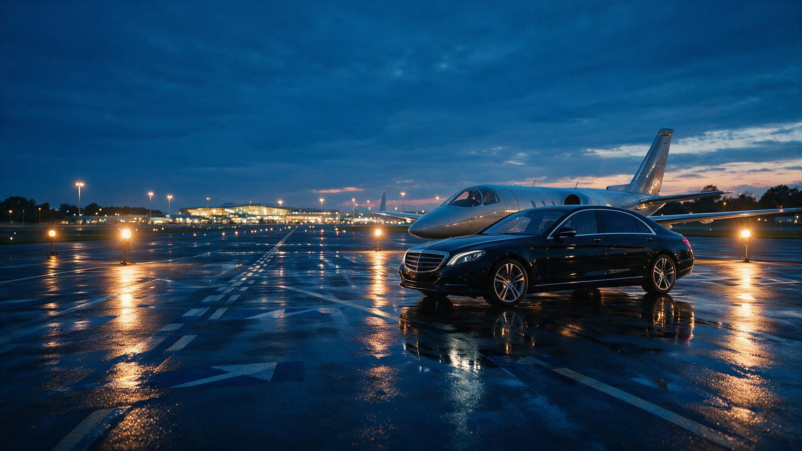
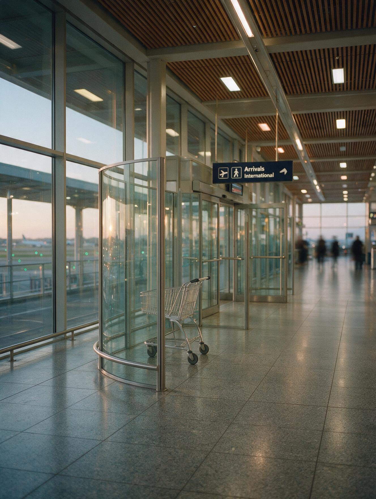
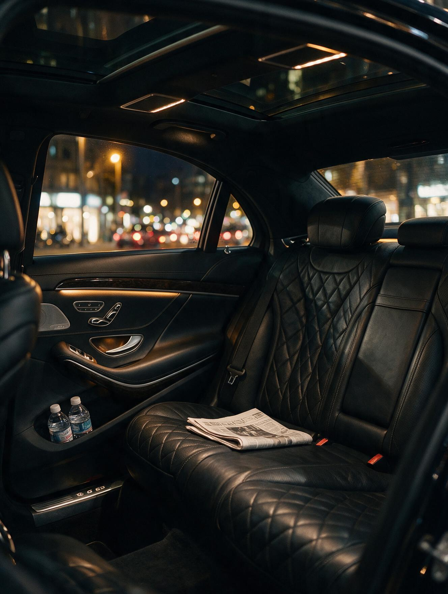
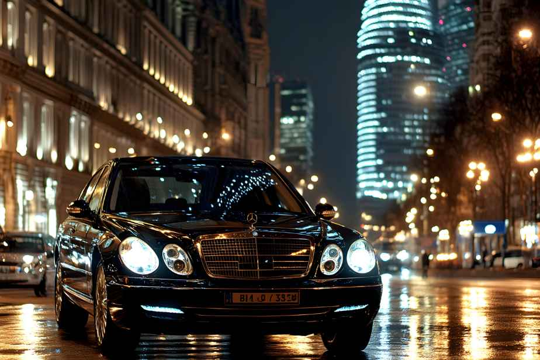
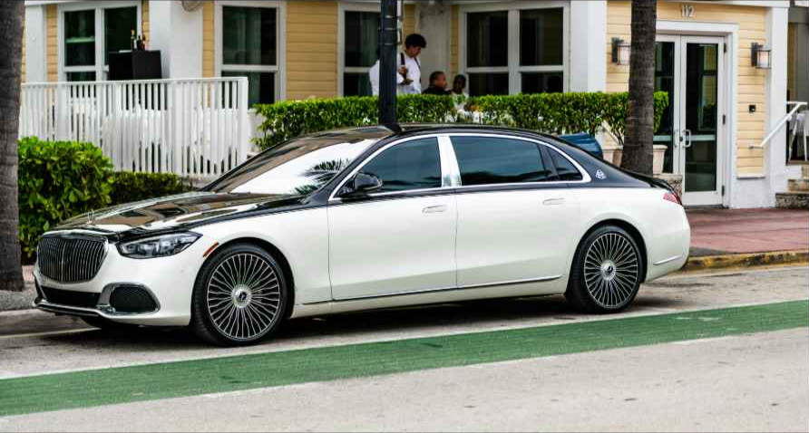

RESERVE
RESERVE
RESERVE
RESERVE

Chauffeured transfers to and from JFK, LaGuardia, Newark and every private terminal in the region — flight-tracked, met inside the hall, and handled by a chauffeur who already knows your name.

An airport is where a good service either proves itself or unravels. Ours is built so that a delayed flight, a lost bag or a changed terminal never becomes your problem to solve.
Your tail number and flight are monitored live. The chauffeur is dispatched to the real landing time — early or three hours late, at no change in price.
Your chauffeur waits at baggage claim or customs with a discreet name board, takes the luggage and walks you to the car. Curbside instead, if you prefer speed.
Sedan, Maybach, Sprinter or armoured — cooled or warmed before you reach it, water and the day’s papers already inside.
Assistants and concierges reach a dispatcher who already has the itinerary open — never a queue, never a re-explanation.
Terminal geography, curb rules and holding lots differ at every field. Our chauffeurs work them daily — which is why our cars are waiting rather than circling.
All terminals plus international arrivals at customs. Long-haul and diplomatic itineraries are our daily work here.
Minutes from our Long Island City base — the shortest response time in our network for same-day changes.
Routed with the tunnels and turnpike in mind, and a departure time set backwards from your gate, not from the map.
Planeside where the operator permits it. We coordinate directly with your flight department or FBO.
Onward runs to Greenwich, Bedford and the Hudson Valley, or straight into Manhattan.
Paired with East End and Hamptons transfers through the season, including multi-car arrivals.
A transfer quoted honestly is a transfer you can hand to an accounts team without a second conversation. Everything below is in the rate.
Counted from wheels down, not from the schedule.
Customs and baggage take the time they take.
Name board at baggage claim or customs, luggage handled.
Quoted in the rate — no line items after the fact.
Fitted and checked before the car leaves the garage.
Plans change. Sedans and SUVs, no charge.


Two passengers, two large cases. The default for a single arrival into Manhattan.

For the principal who will be photographed at the curb. Rolls-Royce and Bentley on notice.
Delegations, crews and full luggage holds — including armoured cars for protected arrivals.
Yes — every arrival is monitored against live flight data and the chauffeur is dispatched to the adjusted landing time. A delay or an early touchdown costs you nothing.
Sixty minutes on domestic arrivals, ninety on international — counted from wheels down rather than the scheduled time.
On request, at baggage claim or the customs exit, with a discreet name board and hands for the luggage. Curbside pickup is there when you would rather move quickly.
We set the pickup backwards from your gate time using the day’s real traffic and TSA conditions — typically three hours before an international departure and two before a domestic one.
Regularly. Multi-car arrivals, staggered flights and consulate protocol are coordinated by one dispatcher who holds the whole manifest — see Partners & Clients.
Twenty-four hours a day, three hundred and sixty-five days a year — for a single arrival or a standing account.